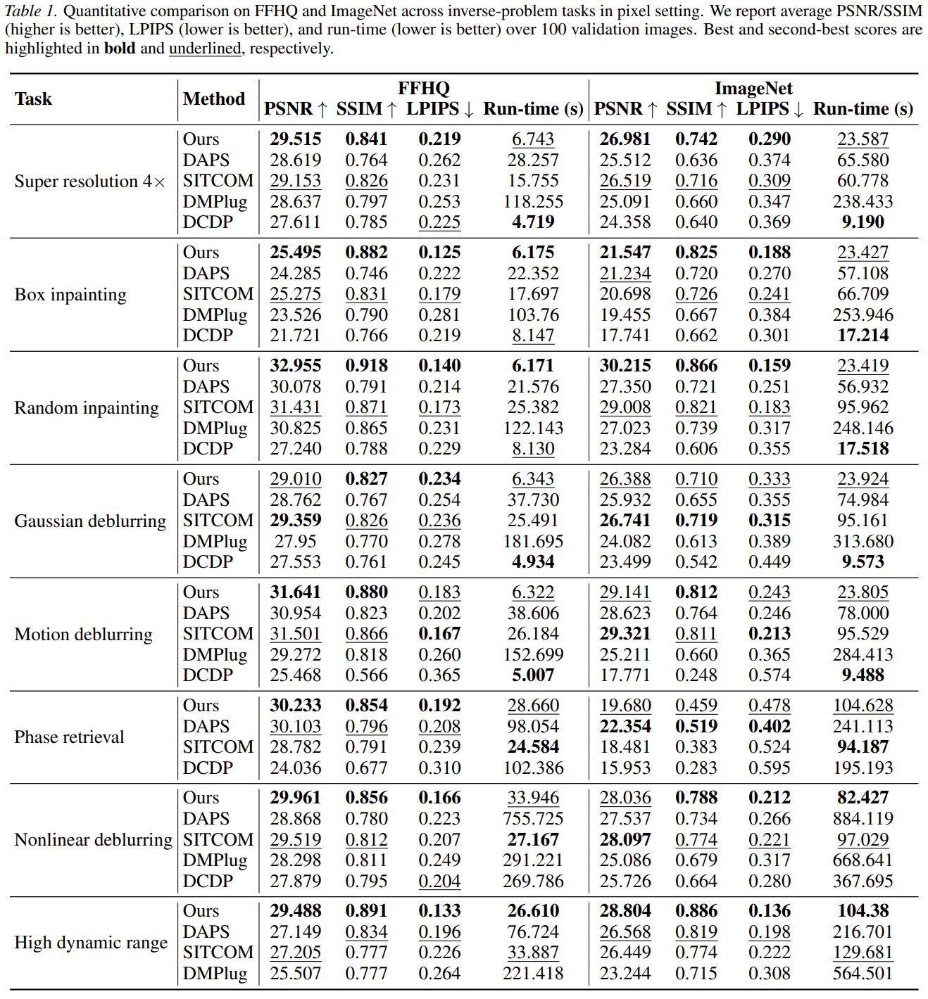
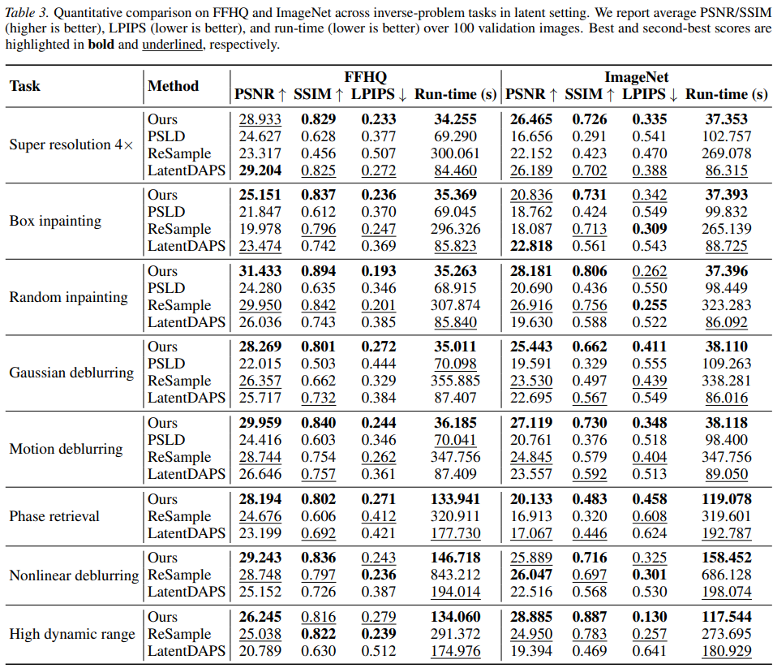
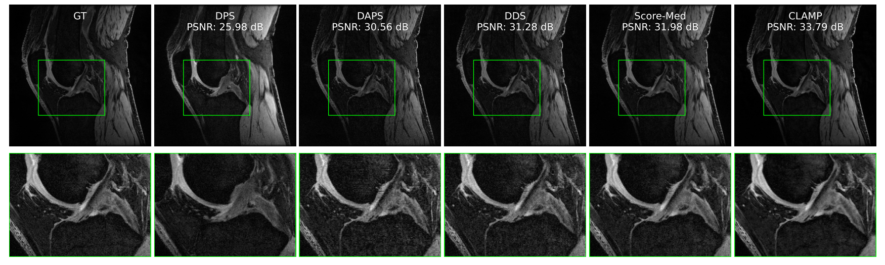

Abstract
Diffusion posterior sampling conditions pretrained diffusion priors on measurements, but conventional data-consistency updates often depend on hand-tuned scalar guidance weights. Such scalar updates can become unstable when inverse problems have stiff, operator-dependent curvature, especially for nonlinear forward models or latent parameterizations. CLAMP addresses this failure mode with a per-noise-level damped Gauss–Newton correction computed in diffusion-state coordinates. The correction pulls likelihood gradients back through the denoiser, uses a one-sided curvature model that avoids forward denoiser-Jacobian products, and stabilizes the update with manifold-aligned anisotropic damping. Each correction is solved by a fixed-budget matrix-free GMRES routine, then propagated with a variance-preserving Langevin transition. Across FFHQ, ImageNet, and accelerated MRI reconstruction, CLAMP achieves a strong quality–runtime trade-off in both pixel and latent settings.
Method

At each noise level, CLAMP first queries the denoiser to obtain a clean prediction and evaluates the composed measurement residual. Instead of moving along a scalar-scaled likelihood gradient, it forms a denoiser-pullback likelihood signal in diffusion-state coordinates and solves a damped Gauss–Newton system. The curvature operator keeps the adjoint denoiser pullback for coordinate-correct directions while avoiding expensive forward denoiser-Jacobian products inside curvature matrix-vector products. A rank-one damping metric aligned with the denoiser residual provides prior-aware step control, and the regularization strength is automatically scaled from the diffusion noise level and residual magnitudes.
The resulting correction is computed matrix-free using Jacobian-vector and vector-Jacobian products, so the method applies to linear and differentiable nonlinear forward operators. After the correction, CLAMP advances to the next noise level with a closed-form variance-preserving Langevin step. In latent space, the same update is used after replacing the forward operator with its decoder-composed version.
Experimental Results
Quantitative Evaluation on FFHQ and ImageNet
CLAMP is evaluated on 100 validation images from FFHQ and 100 validation images from ImageNet across eight inverse-problem tasks, including super resolution, inpainting, deblurring, phase retrieval, nonlinear deblurring, and high dynamic range reconstruction. The tables report PSNR, SSIM, LPIPS, and per-image run-time. Overall, CLAMP is competitive or leading on reconstruction quality while offering a favorable run-time profile against iterative diffusion-based baselines.
Pixel-space setting

Latent-space setting

Accelerated MRI Reconstruction

CLAMP also extends beyond natural-image inverse problems. On multi-coil accelerated MRI reconstruction with Poisson-disc undersampling, it obtains the best PSNR and SSIM among the compared diffusion-based baselines at both acceleration factors.
Qualitative Results
The visual comparisons highlight CLAMP across pixel and latent variants, linear and nonlinear forward models, and natural and medical imaging domains. The method reduces artifacts while preserving measurement consistency and perceptual fidelity.
BibTeX
@inproceedings{shin2026clamp,
author = {Seunghyeok Shin and Minwoo Kim and Dabin Kim and Hongki Lim},
title = {Geometry-Correct Diffusion Posterior Sampling with Denoiser-Pullback Curvature Guidance and Manifold-Aligned Damping},
booktitle = {Proceedings of the 43rd International Conference on Machine Learning},
series = {Proceedings of Machine Learning Research},
volume = {306},
year = {2026},
publisher = {PMLR}
}